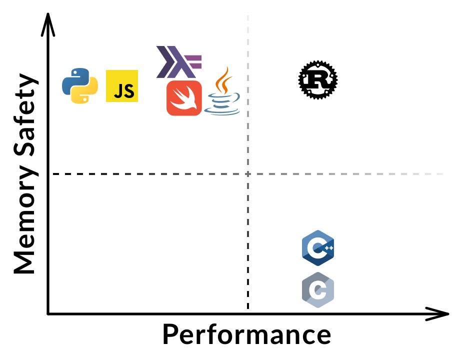
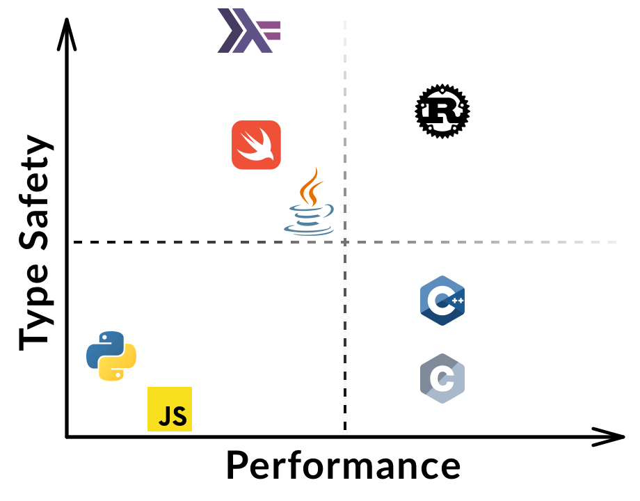

class: center, middle  # Intro to Rust ([nvzqz.github.io/rust-workshop](https://nvzqz.github.io/rust-workshop)) --- .left-column[ ## What is Rust? ] .right-column[ Rust is a systems programming language that: - Runs blazingly fast without compromise - Prevents segfaults (invalid memory access) - Guarantees thread safety - Is open source ([github.com/rust-lang/rust/][rust]) and actively developed by Mozilla and the community ] --- .left-column[ ## What is Rust? ## Rust Features ] .right-column[ - Zero-cost abstractions - Move semantics - Guaranteed memory safety - Threads without data races - Trait-based generics - Pattern matching - Powerful metaprogramming (macros) - Type inference - Very minimal runtime - Can efficiently call C _and_ be exposed as C - State-of-the-art package manager (Cargo) ] --- .left-column[ ## What is Rust? ## Rust Features ## Who uses Rust ] .right-column[ These companies are currently using Rust in production: - Mozilla - Dropbox - Atlassian - Postmates - Coursera - NPM (Node.js Package Manger) - Google - [Others](https://www.rust-lang.org/en-US/friends.html) ] ??? | Company | | How? | | :-------- | ----- | :--- | | Mozilla | | Integrated in Firefox and other projects | | Dropbox | | Optimizing cloud file-storage | | Atlassian | | Analyzing petabytes of source code | | Postmates | | Used by Infrastructure team to write system daemons | | Coursera | | Programming Assignments in secured Docker containers | | NPM | | Replacing C and rewriting performance-critical bottlenecks in the registry service architecture | | Google | | Components of Fuchsia (experimental OS) | --- .left-column[ ## What is Rust? ## Rust Features ## Who uses Rust ## Installing Rust ] .right-column[ The Rust compiler and toolchain can be installed by following the instructions at [rustup.rs][rustup]. Alternatively, run the following (macOS or Linux): ```sh curl https://sh.rustup.rs -sSf | sh ``` For this workshop, it is sufficient to follow along using [play.rust-lang.org][play]. ] --- class: center, middle # Comparing Rust  --- class: center, middle # Comparing Rust  --- <h1 align="center">Comparing Rust</h1> .left-column[ ## ...with Python ] .right-column[ ```python def main(): for count in range(0, 3): print("{}. Hello World!".format(count)) ``` ```rust fn main() { for count in 0..3 { println!("{}. Hello World!", count); } } ``` ] --- <h1 align="center">Comparing Rust</h1> .left-column[ ## ...with Python ## ...with Swift ] .right-column[ ```swift enum Resource<T> { case busy case ready(T) case unavailable } let res = Resource.ready(42) ``` ```rust enum Resource<T> { Busy, Ready(T), Unavailable, } let res = Resource::Ready(42); ``` ] --- # Primitives ## Scalars - Signed integers: `i8`, `i16`, `i32`, `i64`, `isize` - Unsigned integers: `u8`, `u16`, `u32`, `u64`, `usize` - Floating point: `f32`, `f64` - Unicode scalar: `char` (values like `'a'`, `'α'`, and `'∞'`) - Boolean: `bool` (either `true` or `false`) - Unit/empty type: `()` ## Compound Types - Arrays: `[1, 2, 3]` (homogenous) - Tuples: `(1, true)` (heterogenous) --- # Reference Types .pull-left[ ## Rust-style (safe) - `&T` - `&mut T` - `Box<T>` Non-nullable and statically checked at compile-time to ensure correct usage. ] .pull-right[ ## C-style (raw, unchecked) - `*const T` - `*mut T` <br> Raw, nullable pointers that you can find in C as `const T*` and `T*`. ] --- class: center, middle # Arrays --- .left-column[ ## Array Types ] .right-column[ ## `[T; N]` - Can be allocated on the stack or heap - Fixed compile-time size ```rust let arr = [0, 1, 1, 2, 3, 5, 8]; let rep = [42; 100]; ``` ## `Vec<T>` - Heap allocated - Growable - Equivalent to `ArrayList` (Java) or `std::vector` (C++) ```rust let vec = vec![1, 2, 3, 4, 5]; let rep = vec![20; vec.len()]; ``` ] --- .left-column[ ## Array Types ## Slices ] ```rust fn byte_me(slice: &[u8]) { /* ... */ } let bytes: Vec<u8> = get_bytes(); byte_me(&bytes); byte_me(&[0xCA, 0xFE, 0xBA, 0xBE]); ``` Slices allow for getting a view into an array or vector. This is such a common operation, that the conversion from `&Vec<T>` or `&[T; N]` to `&[T]` is automatic. ```rust fn shuffle(bytes: &mut [u8]) { /* ... */ } let mut bytes = vec![/* ... */]; shuffle(&mut bytes); ``` Unless mutating the buffer itself, there's no reason to require `&mut Vec<T>` as a parameter. `&mut [T]` is _always_ more flexible. --- class: center, middle # Strings **Warning:** they're complicated 😅 --- .left-column[ ## String Types ] .right-column[ ## `String` - Allocated on the heap - Growable buffer - Can be converted to `&str` at no cost ```rust let s: String = "I can change".into(); ``` ## `&str` - Called a "string slice" - View into memory - Can be converted to `String` with some cost ```rust let s: &str = "I will never change"; ``` ] --- .left-column[ ## String Types ] .right-column[ The `String` type can be converted seamlessly to `&str`: ```rust fn gimme(string: &str) { /* ... */ } let owned: String = "You own me".into(); let slice: &str = "I am a reference"; gimme(&owned); // Requires passing `owned` as reference gimme(slice); // `slice` is already a reference ``` Rust does this conversion automatically because it has zero computational cost. ] --- .left-column[ ## String Types ## Unicode ] .right-column[ All strings in Rust are encoded as UTF-8. ```rust let english = "The same thing?"; let spanish = "¿La misma cosa?"; println!("{}\n{}", english.len(), spanish.len()); ``` This outputs **15** and **16**, which might surprise some of you. English characters use one byte but other languages may use more. If we can't trust characters to be one byte, what do we do? ] --- .left-column[ ## String Types ## Unicode ] .right-column[ **Solution:** iterators! ```rust let spanish = "¿La misma cosa?"; for ch in spanish.chars() { println!("{}", ch); } ``` The `.chars()` iterator will provide a `char`, which can encode a Unicode code point. **Warning:** the `char` type in Rust **is not** like `char` in C: - C `char` is 1 byte - Rust `char` is 4 bytes ] --- <h1 align="center">Rust Resources</h1> ## [Rust by Example](https://rustbyexample.com/) A collection of runnable examples that illustrate various Rust concepts and standard libraries. ## [Rust Book](https://doc.rust-lang.org/book/second-edition/) (2nd Edition) An official introductory book on Rust. ## [Awesome Rust](https://github.com/rust-unofficial/awesome-rust) A curated list of Rust code and resources. [rust]: https://github.com/rust-lang/rust/ [play]: https://play.rust-lang.org/ [rustup]: https://www.rustup.rs/